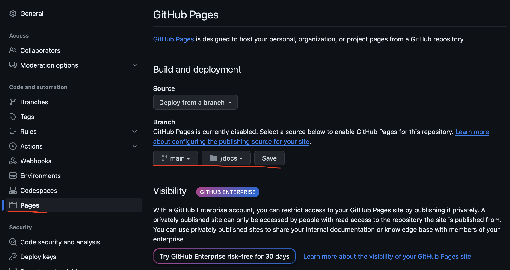

Steps how to publish to Github pages
- Create a repository or navigate to existing repository
- Go to settings of the repository and enable github pages (don't forget to click save) 
- Push `docs` directory with web page content into `main` branch
- Navigate to `https://{username}.github.io/{repository}`